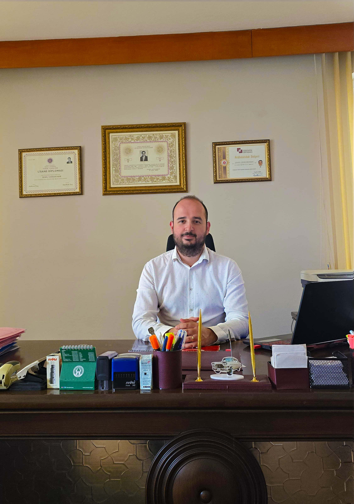

Avukat Anıl Güzel; Antalya Muratpaşa'da ceza, gayrimenkul, iş, idare, icra, iflas, veraset, aile, şirketler, sözleşmeler, ticaret ve yabancılar hukuku alanlarında profesyonel avukatlık ve danışmanlık hizmeti vermektedir.

Hukuki uyuşmazlıklarınızda ilk görüşmeden dosya kapanışına kadar şeffaf, stratejik ve titiz bir yol haritası izliyoruz.
Uyuşmazlığın hukuki ve fiili boyutlarını detaylıca dinliyor, sahip olduğunuz bilgi ve belgeler ışığında ilk değerlendirmeyi yapıyoruz.
Mevzuat çerçevesinde en kısa ve en etkili sonuca ulaşacak dava veya uzlaşma stratejisini belirliyoruz.
Dava açılışı, dilekçeler, yazışmalar, mahkeme veya uzlaşma süreçlerinin her aşamasını titizlikle yürütüyor, sizi düzenli olarak bilgilendiriyoruz.
Sürecin tamamlanmasının ardından kararın icrası, infazı ve hakların teslimi aşamalarını neticelendirip dosyayı kapatıyoruz.
Hukuk ve idare yargısında dava açma süreleri (hak düşürücü süreler ve zamanaşımları) son derece katıdır. Hak kaybına uğramamak adına uyuşmazlığın doğduğu andan itibaren en kısa sürede hukuki destek alınması hayati önem taşır.
İş uyuşmazlıkları, ticari davalar ve belirli kira/komşu hakkı uyuşmazlıklarında dava açmadan önce arabuluculuğa başvuru yapmak yasal bir dava şartıdır. Bu süreçler hukuki uzmanlıkla yürütülmelidir.
Ücretlendirme, Türkiye Barolar Birliği tarafından yayımlanan Avukatlık Asgari Ücret Tarifesi'nin altında olmamak kaydıyla; uyuşmazlığın türüne, dosyanın kapsamına ve harcanacak hukuki mesaiye göre belirlenmektedir. Net ücret bilgisi, ilk görüşmede dosyanız incelendikten sonra şeffaf bir şekilde tarafınıza sunulur.
Avukatlar, Avukatlık Kanunu'nun 36. maddesi gereği mesleki sır saklama yükümlülüğü altındadır. Paylaştığınız tüm bilgi, belge ve detaylar yasal güvence altında olup kesinlikle gizli tutulur.
Hukuken her davada avukatla temsil edilmek zorunlu olmamakla birlikte, ağır ceza mahkemelerinde görülen yargılamalarda veya kişinin kendini savunamayacak durumda olduğu hallerde barodan zorunlu müdafii atanır. Ancak hak kaybı yaşamamak için profesyonel destek almak hayati önem taşır.
Hukuki danışmanlık konusunda uzman ekip.